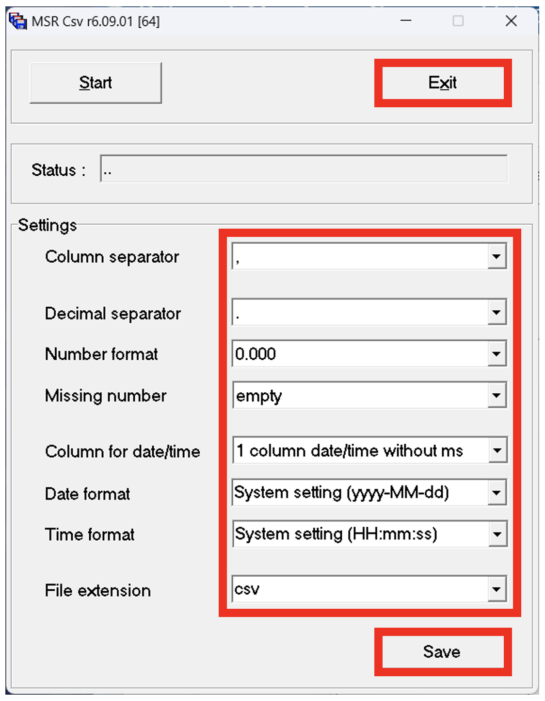
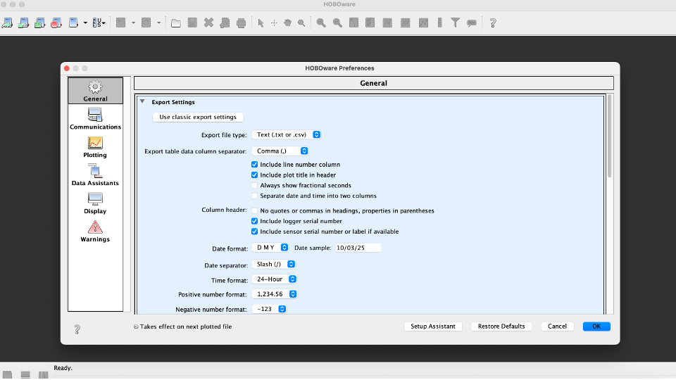
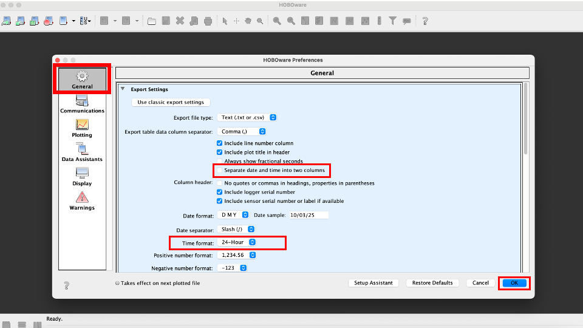

5 Export
After a deployment, the data can be retrieved from the logger and exported as a .csv data table. It is important to save your data in the data format that can be recognised by the Mini Buoy App.
5.1 MSR145
To export acceleration data from the MSR145 B4 logger:
- Open the MSR software
- Double-click
Csv
- Choose the settings according to the template below and click
SaveandExit. This step only needs to be done once if exporting data from several loggers in a session

- Connect your data logger with the USB cable
- Open the MSR software and double-click
Reader. ClickOKto select a specific data file if prompted- The data will be saved onto the computer as an .msr file unique to the software
- The MSR software should automatically open the .msr file in order to view the data. If nothing happens, double-click
Viewerand selectFile,Open, and select the .msr file - The data should look similar to the graph below, with low tide recorded as 0 and high tide recorded around -1. Any data at the start and end of the deployment which is not part of the desired measurement period can be removed by using the cross arrows button and selecting the period of interest. The graph should always start and end with a period of low tide (i.e. 0 y acceleration)
- Select
File,Export time window as text…, and select an appropriate folder to save the data as a .csv file
5.2 HOBOware
To export acceleration data from the Pendant G Data Logger:
- Open the HOBOware software
- Open the preferences window by selecting
HOBOwareandPreferences...

- Select
General,Export Settings, and ensure thatSeparate date and time into two columnsis unchecked - Press
OK

- Select
Plot Setup - Check the
X Accelbox
- Select
Plot - Select
Export - Save the file as
.csv